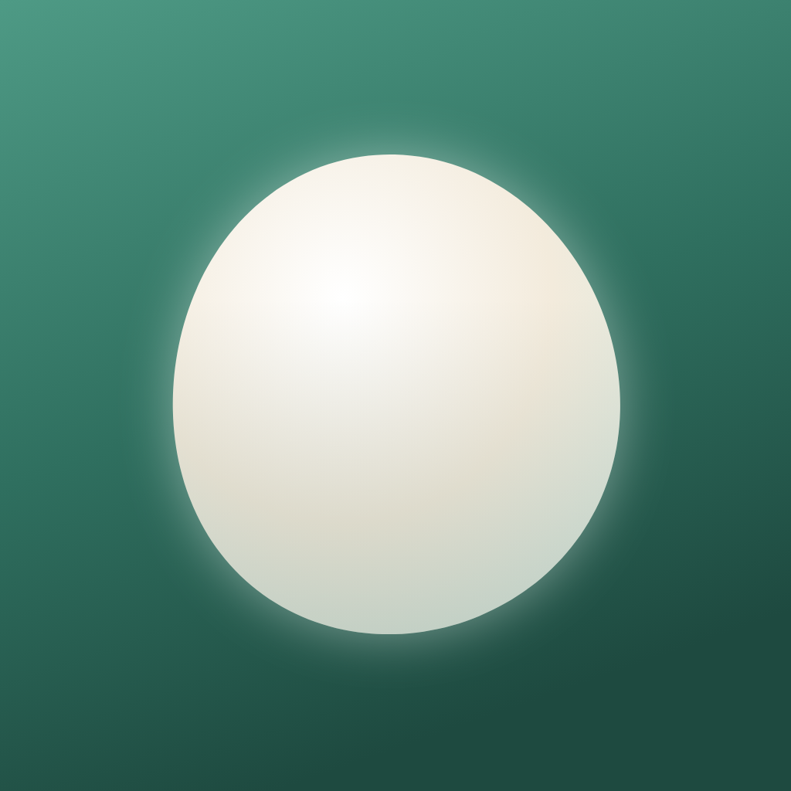
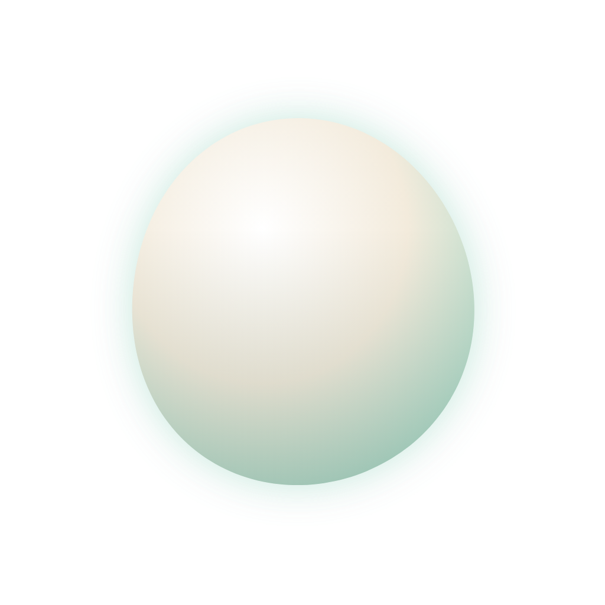
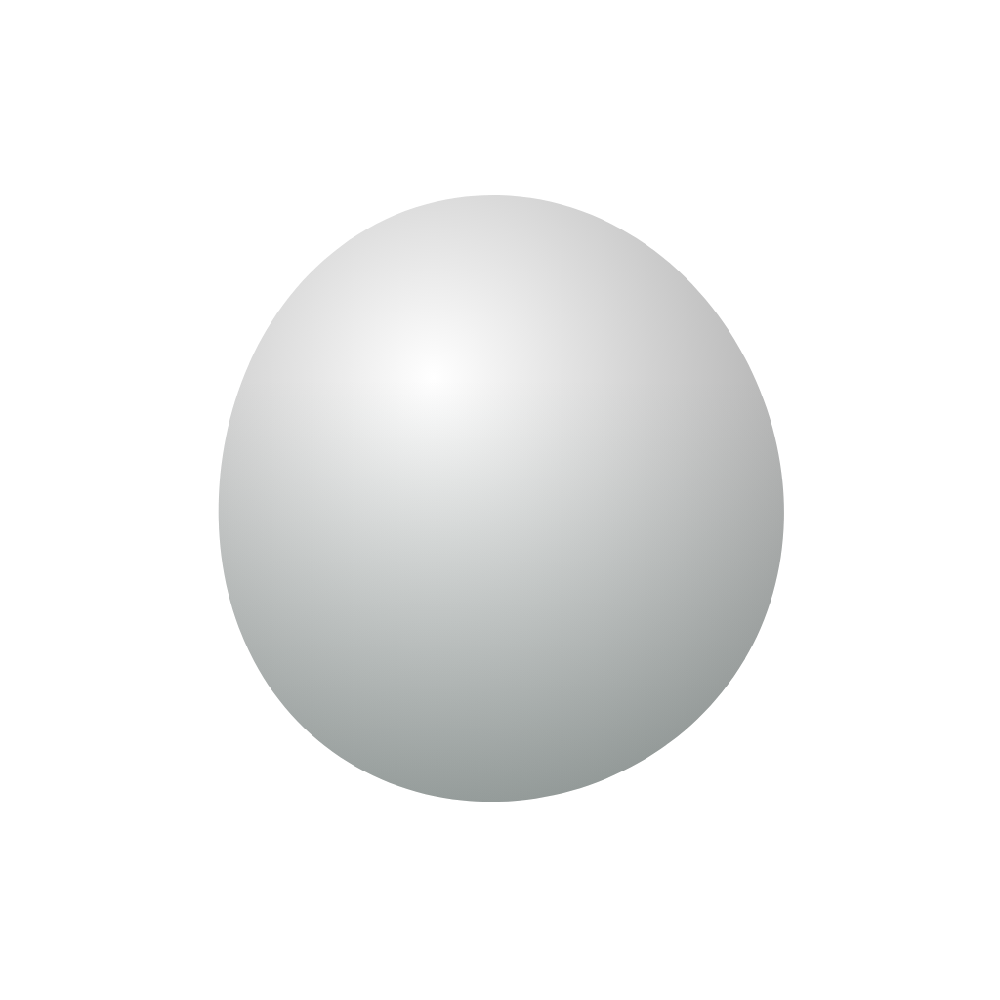
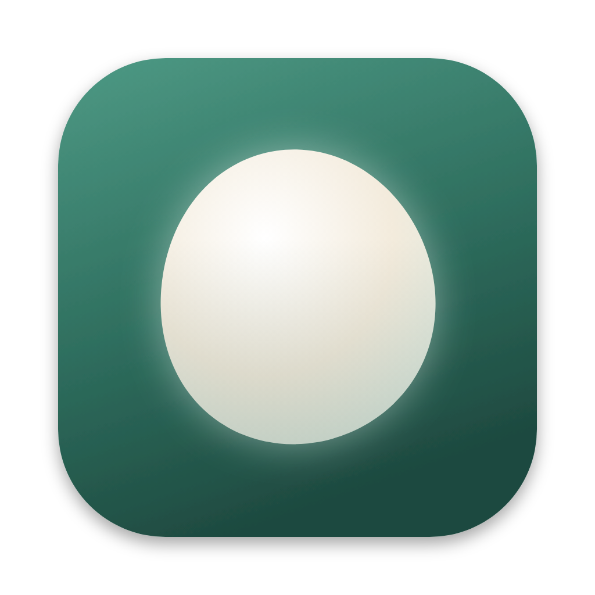

Azel app icon
The in-call orb on celadon jade: a porcelain moon-jar blob with exactly the in-app outline (DESIGN.md §6.2), a soft glow, optically centered. Generated by make_icons.py; every image on this page is the shipped PNG.
iPhone home screen: default, dark, tinted (iOS 18)

캘린더
메일
사진
지도
메모
설정
음악
Default

캘린더
메일
사진
지도
메모
설정
음악
Dark (transparent art on the system backdrop)

캘린더
메일
사진
지도
메모
설정
음악
Tinted (grayscale × an amber tint, approximated)
Small sizes (CSS px = pt at 1×)
29 pt is the Settings and Spotlight size; 20 pt is notifications.
60 pt @2×
60 pt
40 pt
29 pt
20 pt
Azel
Mac: Dock and menu bar

128
64
32
16
Menu bar: outline while idle, filled during a call (§8.1). Both are template images (black + alpha); macOS recolors them for light, dark and highlighted bars.